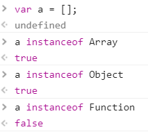

JavaScript & the Core CORE if you read this...72 virgins will ..
window is the globol scope.
and This, usually refers to the global object - window.
this === window
this.window === window.
If this is inside a function, and the function is calld, so this will be the function.
Will refer to the calling object (left of the . )
so it will activate the function and define the this in the functions Runtime
this|mdn
Call and apply determine what will be our this in our function. call works with ',' . apply works with arrays
they both run the function.
bind() terurns a new function, with 'this' that it's calld for.
It doe's not call the function.
use a capital letter, to show it's a constructor.
it's a building plan.
a constructor function, has a this for every paramater. in order to activate it.
we use - the keyword NEW and we define the this in parentesis.()
each new will get a new object, with all the parameters.
every function in JavaScript is actually an object. that has properties and methods.
prototype is an object, that contains all the intiel values from it's intiel object.
just like inheritance.
First comes the proto of the Object, then the function, and then anything else.
In reality, today there is a way to create a new object-
and that's considerd the "Best Proctice".
InstenceOf - tests if along the prototype chain, the prototype of the constructor.
The Secret _proto_ is the refrence to an object internal prototype.
Creats a new object with the specified object and properties.
server - object prototype - null.
object.hasOwnProperty - checks if the object has certin property.